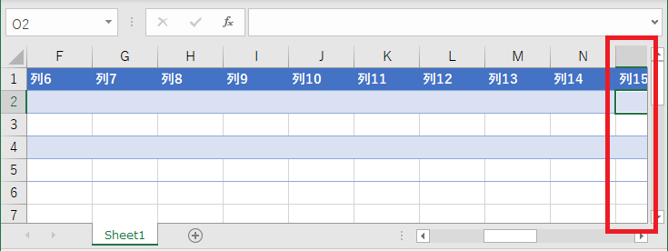
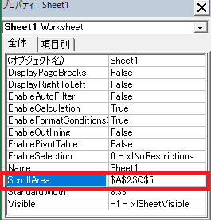
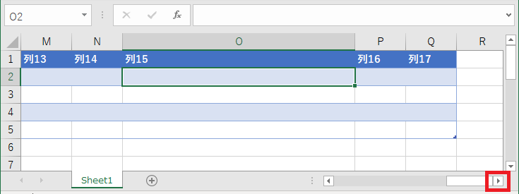
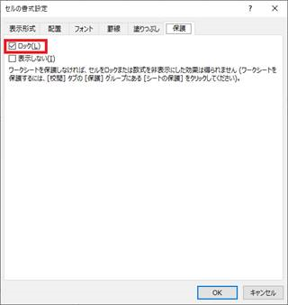
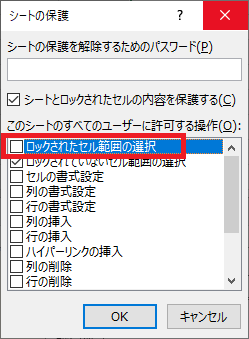

こんにちは、Office サポート チームの中村です。
Excel には、ワークシートのスクロール可能な範囲を設定する ScrollArea というシート プロパティが用意されています。本記事では、このScrollArea プロパティを設定したとき、キーボードの矢印キーや Tab キーなどで選択セルを移動したとき、ウィンドウに表示されていないセルに移動しても、そのセルが画面に表示されるようシートがスクロールしない動作について記載します。
1. 現象
以下の画面キャプチャをご覧ください。この画面では、O2 セルが現在選択されていますが、画面右端に見切れて表示された状態になっています。(赤枠部分)
通常、例えば A2 セルから右矢印キーや、Tab キーで B2、C2・・・と順に列を移動すると、選択状態のセル全体がウィンドウ内に見える位置に自動的にスクロールされます。しかしながら、後述の状況においては、この画面キャプチャのように十分にスクロールされない場合があります。またこのあと、O 列以降のセルに移動してもこの位置のままスクロールしません。

2. 現象が発生する状況
この動作に直面する主な状況は、ワークシートの ScrollArea プロパティが設定された状態で、かつセルの幅や高さが広げられているときに、スクロール可能範囲の終端に近いセルに移動する場合です。
Excel が画面外の領域にスクロールするときに、スクロール後のウィンドウ内に表示するシート範囲などを、セルの幅や高さ / ウィンドウのサイズ / 残りのスクロール可能範囲などの要素を基に算出します。これらの要素の組み合わせ次第で、スクロール後の表示位置を期待通りに算出できない場合があり、この現象が発生します。
また、Excel バージョンによっても細かな動作は異なるため、例えば同じファイルを同じウィンドウ サイズで開いても、スクロールしなくなる動作が生じる列や行はバージョンによって異なる場合があります。
発生に関わる条件をまとめると以下の通りです。
条件 1:
ワークシートの ScrollArea プロパティが設定されていること
※プログラムからは Worksheet オブジェクトのプロパティや、Visual Basic Editor でプロパティ ウィンドウからも設定・確認できます。
ScrollArea プロパティ (Excel)
https://docs.microsoft.com/ja-jp/office/vba/api/excel.worksheet.scrollarea

条件 2:
以下の要素等の組み合わせによって発生
- 選択セルから ScrollArea プロパティの終端までの残りの幅・高さ
- Excel ブック画面のウィンドウ サイズ
- 各セルの幅や高さ
- シートの倍率
- ウィンドウ サイズなどの算出に関わるディスプレイの拡大縮小、スケール設定
この動作は、ユーザーの利用上、不便な場合がある動作であることは認識しておりますが、現状のスクロール動作の内部処理上の制約として、現時点でサポートされる全てのバージョンの Excel で発生しうる制限動作となっています。(2021/1/12 現在、サポート対象の Excel は Excel 2013 / 2016 / 2019 / Office 365 の Excel です。)
3. 回避策
この動作が生じるファイルやウィンドウ サイズなどの構成でも、以下のいずれかの方法でスクロールできます。
3-1. スクロールバーでスクロールする
マウス操作でスクロール バーによってスクロールすると、画面をスクロールできます。
以下は、先述のファイルでスクロール バーの右矢印 (赤枠部分) をマウスで操作してスクロールした例です。

3-2. ScrollArea を広げる、または解除する
移動先のセルから、ScrollArea の終端までの幅や高さが十分に広い場合には、正常にスクロールできます。
例えば A～Q 列にあるテーブルの範囲だけスクロールするさせるため、ScrollArea プロパティに A ～ Q 列を設定しているとします。これを、例えば Z 列など、ある程度余裕を持った範囲をスクロールできるよう設定すると、実際にスクロールしたい範囲では期待通りスクロールできます。(どの列までを ScrollArea に設定すれば問題ないかは、条件 2 の各要素に依存します。具体的な値は定められませんが、実際の環境・ファイルで動作を確認しながら、余裕を持った範囲を設定してください。)
ScrollArea を広げるにあたって、例えば上記の例であれば、テーブル外の R ～ Z 列のセルを選択させたくない場合は、シート保護の設定で [ロックされたセル範囲の選択] を無効にすることでセル選択を禁止できます。
設定手順:
1. 選択させたくないセル (上記の例では R ～ Z 列) のセルを右クリックし、[セルの書式設定] – [保護] で [ロック] を有効にします。(既定では有効です。)
2. 反対に、選択を可能とするセル (上記の例では A ~ Q 列) は同様のメニューで、[ロック] を無効にします。
3. [校閲] タブ – [シートの保護] – “このシートのすべてのユーザーに許可する操作” の一覧で [ロックされたセル範囲の選択] のチェックを外します。


VBA などのプログラムからは、以下で設定できます。
Worksheet. EnableSelection プロパティ (Excel)
https://docs.microsoft.com/ja-jp/office/vba/api/excel.worksheet.enableselection
このプロパティで xlUnlockedCells を設定します。このプロパティは、ワークシートを保護した状態でのみ有効ですので、さらに以下の Protect メソッドでワークシートを保護します。
Protect メソッド (Excel)
https://docs.microsoft.com/ja-jp/office/vba/api/excel.worksheet.protect
また、選択セルの移動を制限することが ScrollArea プロパティを設定している目的である場合は、上記の設定を代わりに行うことで、ScrollArea プロパティの設定自体を削除することも検討できます。(ただし、スクロール バーの操作ではスクロールできます。)
ScrollArea 設定を削除する場合は、プログラムからは ScrollArea プロパティに空の値 (“”) を設定してください。プロパティ ウィンドウの場合は、ScrollArea プロパティの値を削除してください。
今回の投稿は以上です。
本情報の内容 (添付文書、リンク先などを含む) は、作成日時点でのものであり、予告なく変更される場合があります。